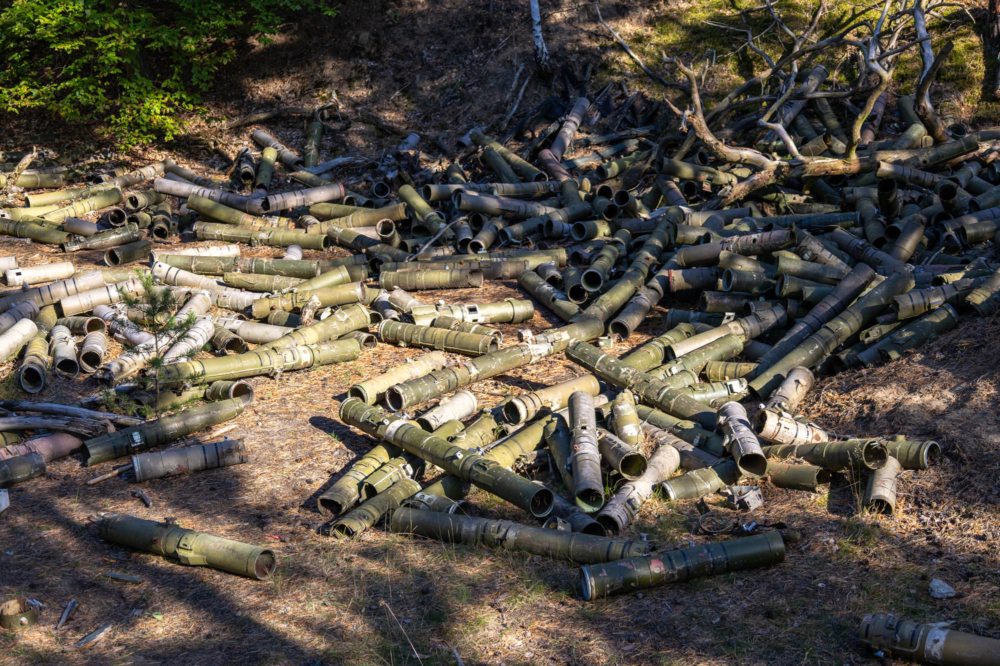
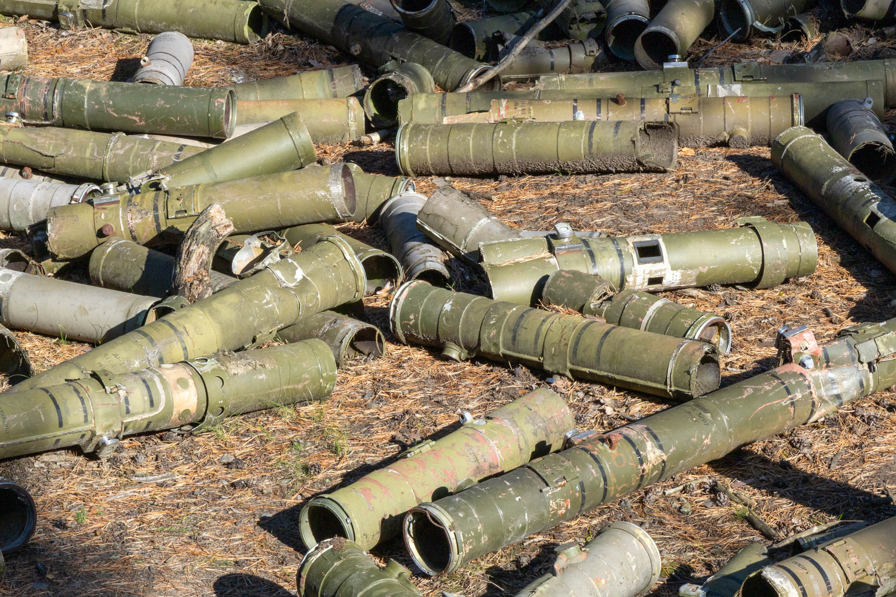
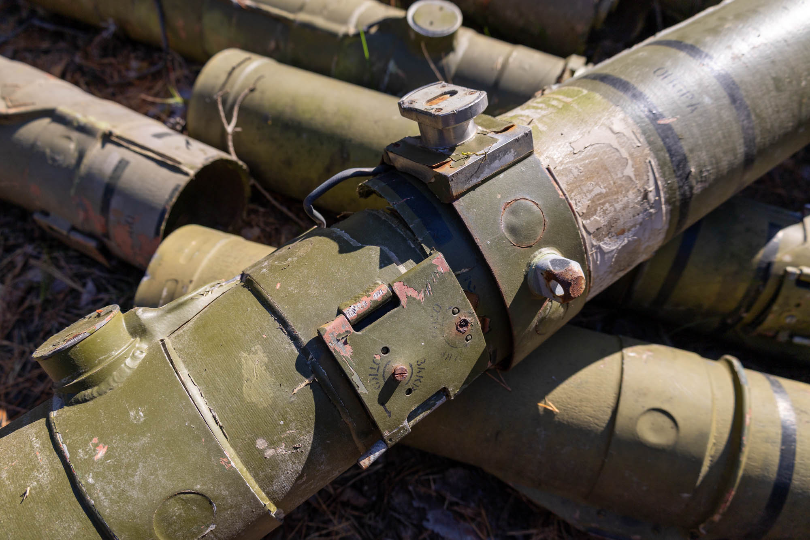
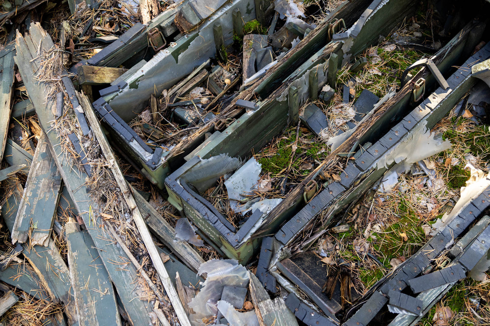
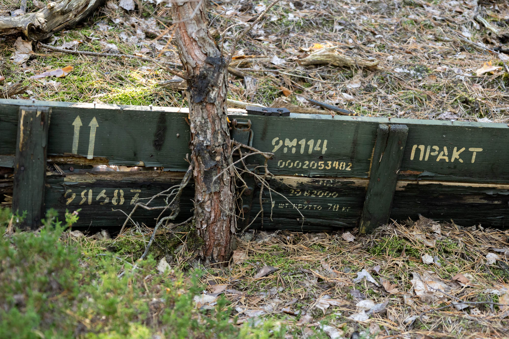
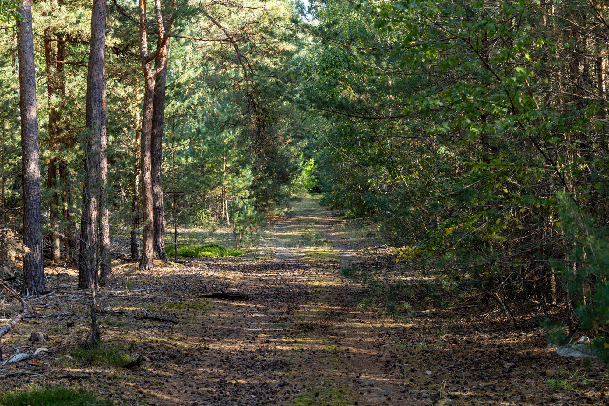

Hidden within the overgrown forest of a former Nazi base later repurposed by the Soviets, lies an lazy solution to a waste problem. Dumped among the trees are hundreds of Cold War era wooden crates and discarded shells from used anti-tank missiles.

Following World War II, this 80-hectare military site primarily served as an ordnance depot and storage facility for various types of aerial weaponry—likely explaining why this specific location deep in the woods was chosen for waste disposal.
These are the remains of Russian radio-guided anti-tank missiles from the Soviet Union. The complete system was known in Russian as 9K114 Shturm, while the missile itself was designated 9M114 Kokon (Cocoon). They could be launched from Mi-24V helicopters, MT-LB tanks, or naval ships.
The former military area also contains over 76 storage bunkers, as well as a mix of warehouses, generators, transformers, and former residential buildings.


Once fired, the 9M114 Kokon leaves behind a glass fibre-reinforced plastic tube. The missile uses SACLOS (Semi-Automatic Command to Line of Sight) for guidance, meaning that the operator only needs to aim and track the target visually while a tracker-to–missile radio link and built-in electronics guide the missile to its target, which can be up to 5 kilometres away.
It is worth noting that there are no active missiles in this dumping ground.


Hundreds of rotting wooden transport boxes can also be found in the woods on the other side of a dirt track. While the wood slowly rots and is reclaimed by nature, unfortunately the steel, plastic, and rubber will remain for a long time.
How these wooden crates and the missile shells ended up in these woods in Eastern Germany is unknown.
Whether this dumping ground will ever be cleaned up remains to be seen.

